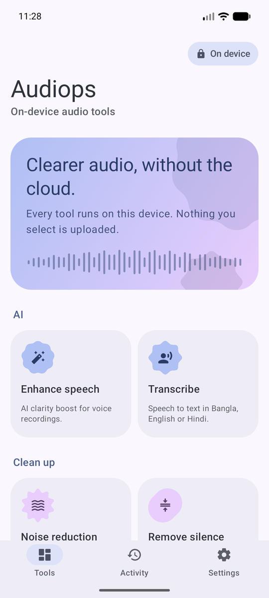
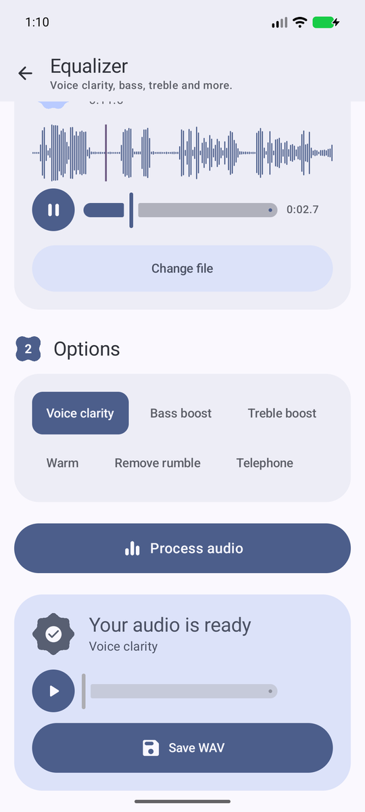
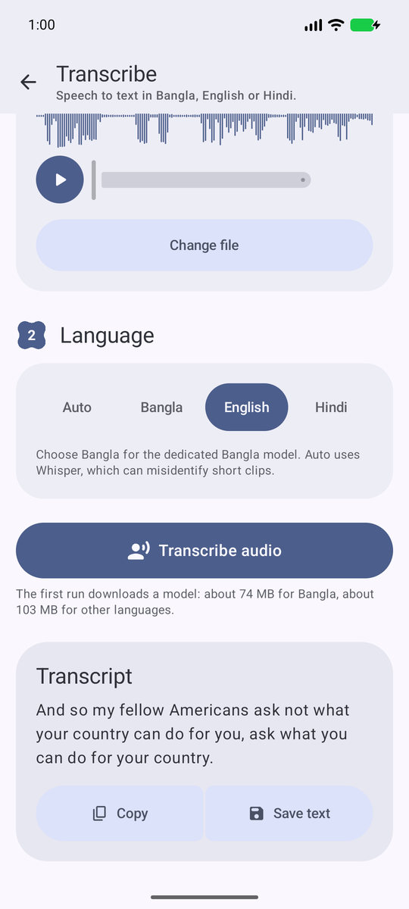
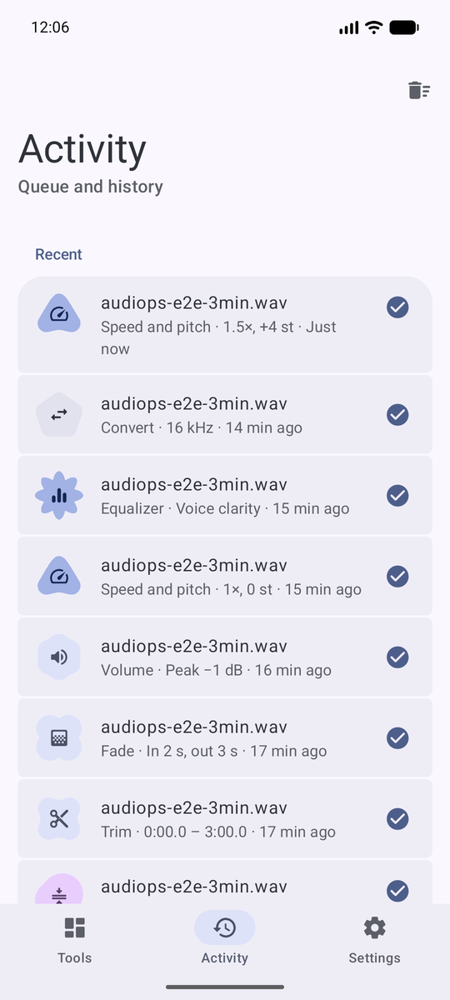

AI
- Enhance speechAI restoration of voice recordings, on device.
- TranscribeSpeech to text in Bangla, Urdu and over 1,600 languages, with automatic language detection.
Open source · Android 8.0+
Clean up, edit, transcribe and analyze recordings entirely on your phone. Nothing you open is uploaded. The AI models download once, then run offline.

Eleven tools, one app
Pick a tool, choose a file, and keep the result. Results are saved as 16-bit mono WAV. Open MP3, AAC, FLAC, OGG and anything else your phone can decode.
Screens



Privacy
Audiops has no server to send your audio to. The network is used for one thing: downloading the AI models, once, from Hugging Face.
Open source
Audiops is Apache 2.0 licensed. The UI is Compose Multiplatform, the DSP is plain Kotlin, and the unit tests run on the JVM without a device.
Roadmap